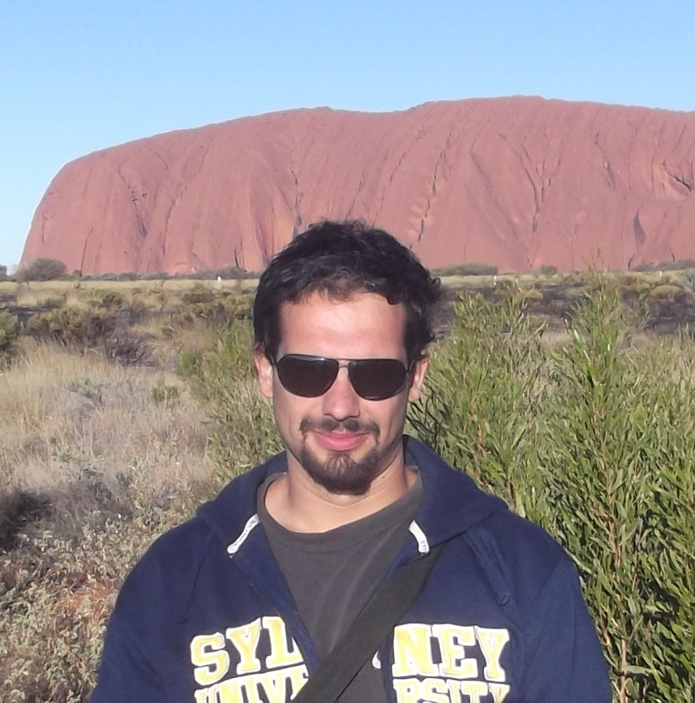
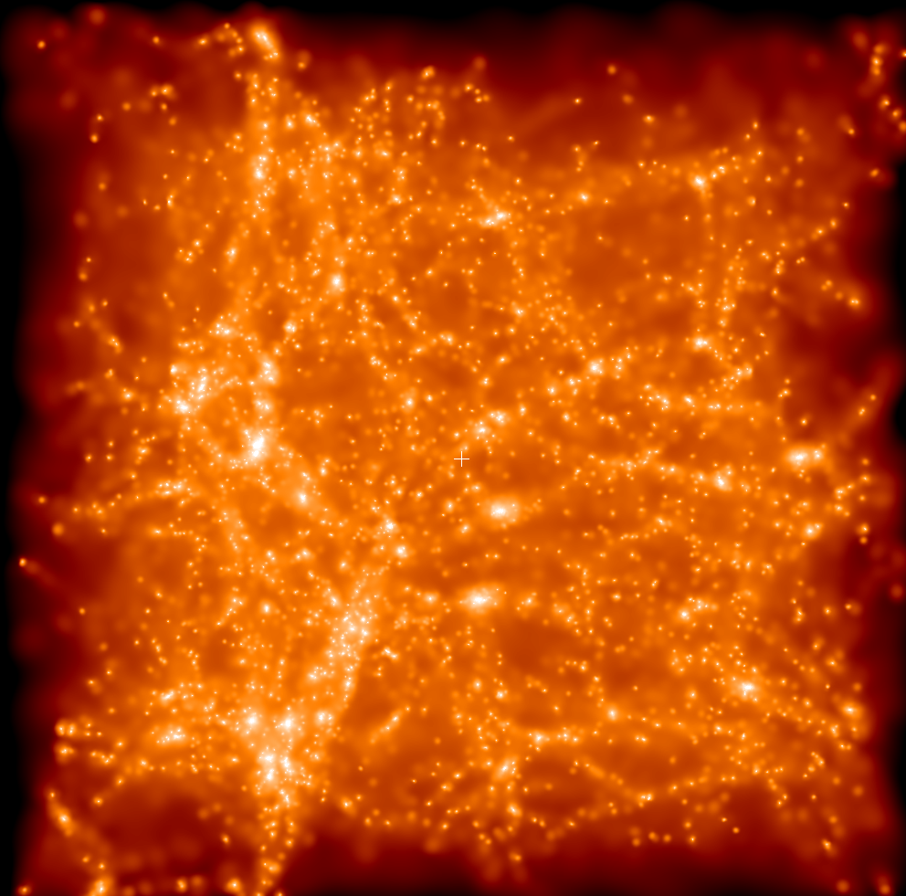
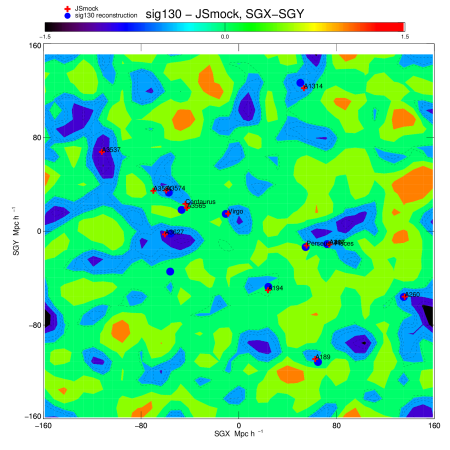
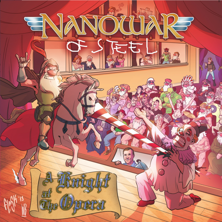

About me
I am a
machine learning specialist working for Top Network S.p.A. in Rome, Italy.
I am a postdoctoral researcher working (remotely) f
In the past, I worked for the
Hebrew University of Jerusalem on Machine Learning
applications to astrophysical data (2020-2021), as a postdoctoral fellow
at the
Astrophysikalisches Institut Potsdam (AIP) in
Germany, between 2018 and 2020 and at the
Racah Institute of Physics, Hebrew University of Jerusalem in
Israel, between October 2014 and October 2017.
I obtained my Ph.D from the
Universidad Autonoma de Madrid in
Spain in May 2014, where I also worked as a teaching assistant between 2010 and 2013.
I graduated in Physics (BSc) and Theoretical Physics (MSc) at the
Universita' degli Studi Roma 3,
Italy.
I have been a visiting graduate student at the
Heidelberg University,
Germany and the
Syndey University,
Australia.
I am a member of the
CLUES collaboration,
working on the reconstruction of the Initial Conditions of the local Universe using galaxy peculiar velocity data.
For more informations please refer to my
CV, the
projects page of this webpage, my
GitHub repositories,
or my
Google Scholar Profile.
I am also the founder, manager and bass-player of the parody metal band
Nanowar Of Steel, which despite starting as a hobby back in 2003 has now become
a pretty serious endeavour, with a solid international fan-base in the tens of thousands-strong and millions of views on YouTube.

Projects
In the past years, I have been working on several different topics in theoretical cosmology, focusing on the computational and numerical aspects of the problems.
This involved the modification and extension of existing codes as well as the development and design of new software tools.
In particular, I am (have been) working on:
Machine Learning applied to cosmological simulations. I am developing
MLEKO
(Machine Learning Environment for KOsmology), a code that relies on popular ML libraries (
scikit-learn, TensorFlow, PyTorch) for astrophysical data analysis.
In particular, I have used
supervised learning methods (
decision trees, random forest, gradient boosted trees, artificial feed-forward neural networks...) to infer dynamical properties
of the Local Group of galaxies from simulations. I am also applying unsupervised learning algorithms (
k-means and
Self Organizing Maps) for
parameter-free classification in the cosmic web, and convolutional neural networks for pattern detection in the simulations' initial conditions.
Constrained simulations of the local Universe,
working on the generation of constrained Initial Conditions with the software tools
Ginnungagap and
IceCore (for which I have developed an MPI-parallel version). Within the CLUES collaboration
I designed the so-called
Local Group Factory,
a numerical pipeline to simulate Local Group-like objects within a large scale environment that matches current observations.
I am developing and mantaining the code
PyRCODIO which
I am using for simulation analysis and post-processing.
N-body and hydro simulations of non-standard cosmologies such as Quintessence, Coupled and Vector Dark Energy models.
This was the bulk of my PhD Thesis, during the course of which I developed a customized version of the popular
GADGET-2 code.
(
PhD Thesis)
Parameter space constraints of Coupled Neutrino-Dark Energy models using the Boltzmann code
CMBEASY and MonteCarlo Markov Chain methods.
(
Master Thesis)

Resources
Below you can find a selected collection of presentations, articles and videos mainly related to my activity as an astrophysicist,
including technical as well as outreach material for the general public. A playlist with most of the interviews I gave for Nanowar Of Steel
can be found on
YouTube
03-04/2020 My lecture series for the general public (in Italian)
L'Universo Spiegato at Alberto Tomba
(
YouTube)
06/11/2019 A presentation I gave at the AIP Kafeerunde in Potsdam,
Germany on the topic
From Astronomy to Music
(
PDF)
31/10/2019 An article about my research on
Forbes
(
PDF,
Link)
09/07/2018 Nature Astronomy paper I co-authored
The Quasi-linear nearby Universe
(
PDF)
19/05/2016, Seminar at the
Beogradska Astronomska Opservatorija in Beograd,
Serbia, on the topic
Obrnuti inženjering Lokalnog Univerzuma
(
PDF)
11/05/2016, Presentation for the general public on the subject
Galei hakvida ve torat hayakhasut haklalit shel Einstein in Jerusalem,
Israel,
for the group
20 zot hatkhalah
(
PDF,
Flyer).
22/10/2015, Seminar at
Universita' La Sapienza, Roma,
Italy,
on the topic
Reverse engineering the (local) Universe
(
PDF)
22/08/2014, Invited talk at the
CLUES Meeting, Potsdam,
Germany,
on the topic
The MergerTree MPI Code
(
PDF)
05/09/2013, Contributed talk at the
PACIFIC 2013 Symposium, Moorea,
French Polinesia,
on the topic
The imprints of quintessence dark energy on the cosmic web and galaxy clusters
(
PDF)
22/12/2011, Interview on
The New Scientist about the influence of dark energy on old massive galaxy clusters
(
Link,
PDF)
02/09/2011, Contributed talk at the
Azores Summer School on Observational Cosmology, Angra do Heroismo,
Portugal, on the topic
Massive high-z clusters and alternative cosmological models
(
PDF)
Podcast
I am running a weekly show called the
GattoCast, where I mainly discuss music, languages and science, mostly in
English but often also in Italian and other languages. You can find it on all major podcasting platforms such as:
